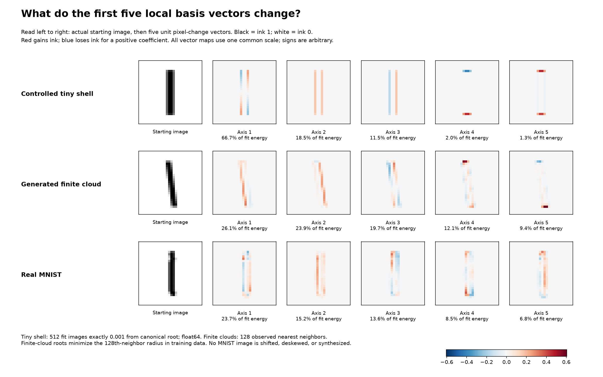
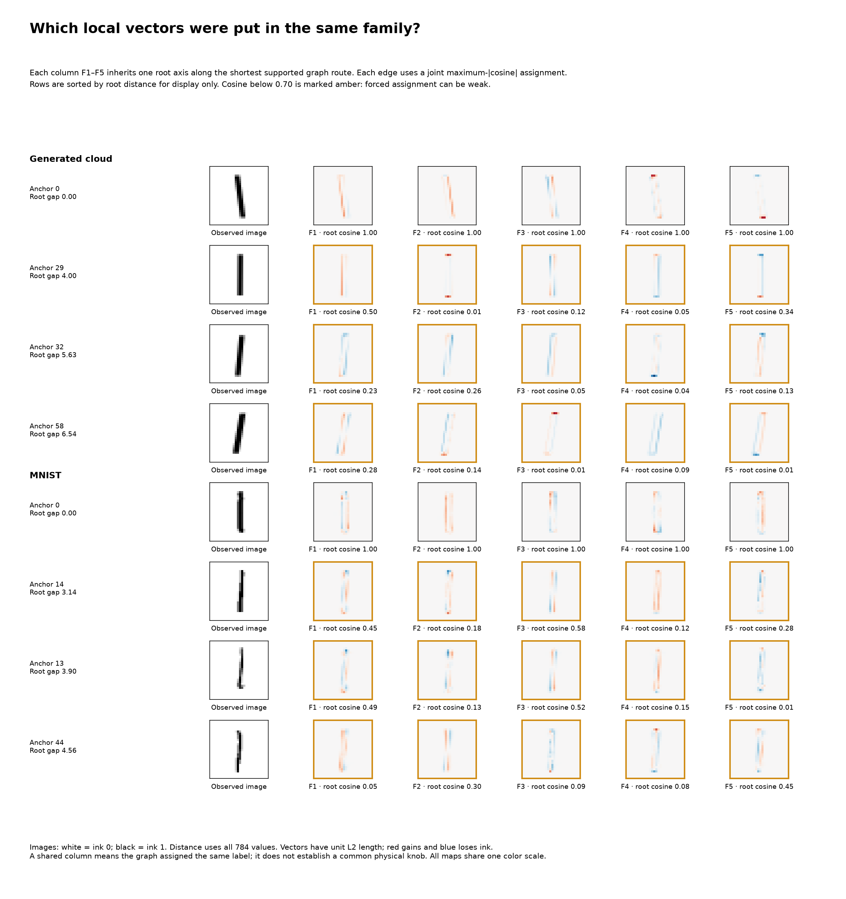
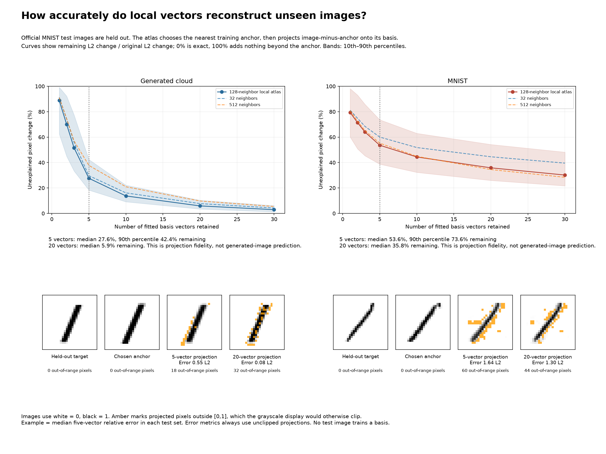
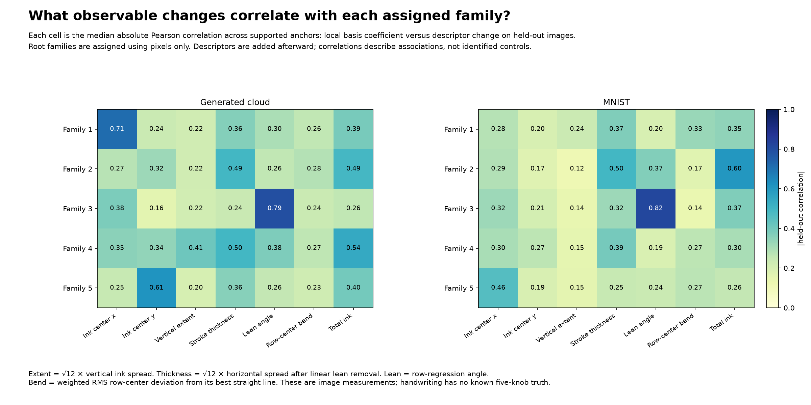
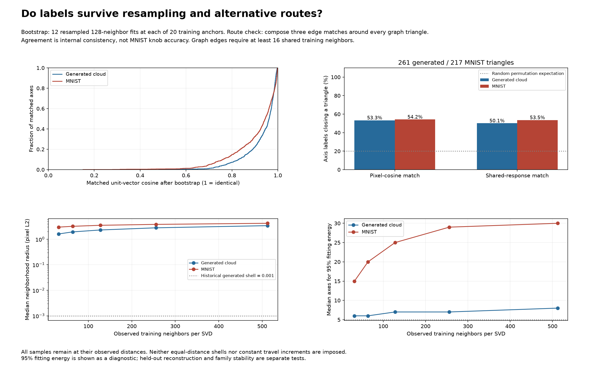

Five vectors leave median held-out change of 53.6% for MNIST versus 27.6% for a size-matched generated cloud. A lean-like family is visible, but labels agree around graph triangles only about 54% of the time. This is local structure, not recovered global handwriting knobs.
Full methods and interpretation · Measured results · Independent verification




